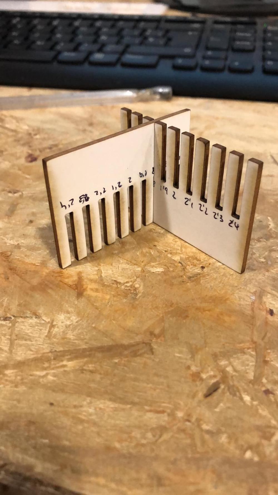

<!DOCTYPE html>
<html lang="en"></html>
<head>
  <meta charset="utf-8">
  <meta content="IE=edge" http-equiv="X-UA-Compatible">
  <meta content="width=device-width, initial-scale=1" name="viewport">
  <title> Rafael Rebolleda — Fab Academy 2020 Documentation</title>
  <!-- Google Fonts-->
  <link rel="stylesheet" href="https://fonts.googleapis.com/css?family=Catamaran&amp;display=swap">
  <link rel="stylesheet" href="../css/main.css">
</head>
<body> 
  <nav>
    <header>
      <ul>
        <li>Rafael Rebolleda</li>
        <li>ESNE + LEON</li>
        <li>Madrid, Spain</li>
      </ul>
      <p class="bio">Human Centric Research & Innovation consultant and professor. Also looking for PhD opportunities!</p>
    </header>
    <ol>
      <li><a href="../">About me</a></li>
      <li><a href="../W1/">W1: Project Mgnt.</a></li>
      <li><a href="../W2/">W2: CAD</a></li>
      <li><a href="../W3/">W3: CCC</a></li>
    </ol>
  </nav>
  <main>
    <h1>W3: Computer Controlled Cutting</h1>
    <p>Alright... so back to Fusion360 to wrestle parametric design (still complete gibberish to me)</p>
    <h2>The Comb</h2>
    <p>First, I created a rough shape by just joining the dots</p>
    <p>In the next step I manually gave them measures</p>
    <p>Finally, I move all cut dimensions as paramenters that depend on the material depth, in this case 2mm cardboard</p>
    <h2>The laser cutter</h2>
    <P>Here's the laser cutter we have on the lab.</P>
    <h2>The Comb</h2>
    <p>This is the cutting of two combs to test what's the best fit and underdstand kerf value</p>
    <p>These are the values I tried</p>
    <p>The best match for this material is at 1,8mm</p>
  </main>
</body>